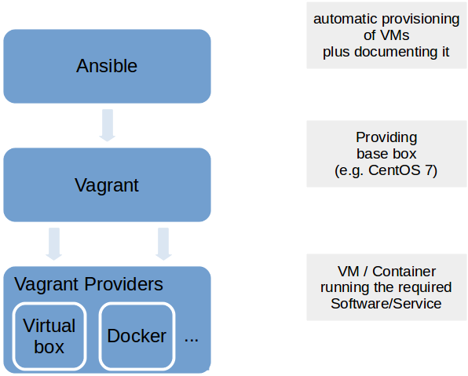

Dev-VMs
from our "Wall of Pain":
"VM for all Apps in Support
-
in order to make sure that we have a running ENV for support"
Problems to be solved
- quick setup a working environment (bugfixing etc.)
- up-to-date documentation of the dev environment
- not messing up my own PC
- independence of mimacom servers (slow VPN)
- quick testing with restoring original situation
VM Image

VM Image - Problems
- very large → Sibad: 14GB (without database)
- no documentation
- lot of effort even for small changes
Vagrant / Ansible
Vagrant / Ansible - Problems
- takes time to build
How does it work?
Prerequisites
- Vagrant must be installed on your machine
- Ansible must be installed on your machine
... and then just
- Checkout the scripts via Git
- Run:
vagrant up
How does it work?

Create environment
vagrant up
Changes on environment
vagrant provision
Dev environment - Login

Dev environment - Tools
Vagrantfile
Vagrant.configure(2) do |config|
config.vm.box = "centos/7"
config.vm.define "sibad.dev" do |srv|
srv.vm.hostname = "sibad.dev"
srv.vm.network "private_network", type: "dhcp"
end
config.vm.provision "ansible" do |ansible|
ansible.playbook = "dev.yml"
end
end
Vagrantfile - box
Vagrant.configure(2) do |config|
config.vm.box = "centos/7"
config.vm.define "sibad.dev" do |srv|
srv.vm.hostname = "sibad.dev"
srv.vm.network "private_network", type: "dhcp"
end
config.vm.provision "ansible" do |ansible|
ansible.playbook = "dev.yml"
end
end
Vagrantfile - Port forward / RAM
Vagrant.configure(2) do |config|
config.vm.box = "centos/7"
config.ssh.insert_key = false
config.vm.synced_folder ".", "/vagrant", disabled: true
config.vm.network "forwarded_port", guest: 8080, host: 8080
config.vm.provider :virtualbox do |v|
v.memory = 2048
end
. . .
Vagrantfile - Ansible provisioner
Vagrant.configure(2) do |config|
config.vm.box = "centos/7"
config.vm.define "sibad.dev" do |srv|
srv.vm.hostname = "sibad.dev"
srv.vm.network "private_network", type: "dhcp"
end
config.vm.provision "ansible" do |ansible|
ansible.playbook = "dev.yml"
end
end
Ansible - dev.yml
---
- hosts: dev_nodes
become: true
roles:
- centos_gui
- create_user
Ansible - Roles
Premade roles
Ansible - Roles
Selfmade roles
ansible-galaxy init restart_server
Ansible role "centos_gui"
tasks/main.yml
---
# install the necessary packages for a GUI
- name: Install x windows system
yum:
name: "@X Window System"
state: present
- name: Install GNOME Shell classic mode
yum:
name: gnome-classic-session
state: present
Ansible role "centos_gui"
handlers/main.yml
---
# handlers for restarting the VM
- name: Restart server
shell: sleep 2 && shutdown -r now "Reboot by Ansible"
async: 1
poll: 0
ignore_errors: true
- name: Wait for server to restart
wait_for:
host={{ inventory_hostname }}
port=22
state=started
. . .
Ansible role "create_user"
tasks/main.yml
---
# tasks file for create_user
- name: add user
user:
name: "{{ create_user_name }}"
group: vagrant
home: "/home/{{ create_user_name }}"
state: present
register: newuser
- name: set password for user (only on creation)
shell: "echo {{ create_user_password }}
| passwd --stdin {{ create_user_name }}"
when: newuser.changed
How can the effort be reduced?
Building blocks
Building blocks
Set of good base VMs → Vagrant boxes
- Base Linux Server (CentOS)
- Linux Server (CentOS) with Oracle Db
- etc.
Building blocks
Set of Ansible roles
- GUI for CentOS
- Java Dev Tools (JDK, IntelliJ, Maven, Git etc.)
- Create Linux user
- Restart Server
- etc.
Additional benefits
-
less download volume
- less disk space when in use:
15GB vs. 7.5GB - once downloaded Vagrant boxes are reused
(and less disk space when not in use):
14GB VM image vs. 1.2GB